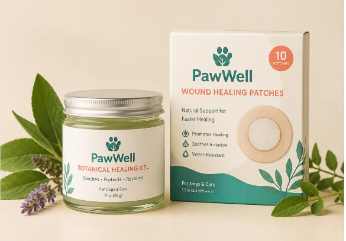

A smart botanical wound-healing platform
Combining botanical therapy, wound-healing peptides and controlled wound-environment modulation, for faster, smarter, safer healing.

Smart Botanical Healing Gel · 30 g | 7 patches / boxThe veterinary wound-care problem
Chronic & contaminated wounds
Often highly difficult to manage effectively in clinical practice.
Limited functionality
Conventional creams, sprays and gels primarily provide basic treatment or protection.
Blind monitoring
Veterinarians lack the ability to visually monitor microenvironment changes between dressing changes.
Disruptive interventions
Repeated dressing changes to check wound status are inconvenient and disrupt healing.
High costs
Advanced wound products are frequently expensive and reliant on importation.
Can we create a low-cost wound dressing that both treats the wound and provides a visual indication of its microenvironment?
Smart botanical wound powder
Powered by botanical bioactives
Promotes the natural healing process, infused with wound-healing peptides and biocompatible biopolymers.
Botanicals + Peptides + Biopolymers
Forms a matrix, instantly hydrates
A specialised gelatin-based structure that hydrates instantly on contact with wound exudate, forming a moist, protective matrix that supports natural healing.
Dry-to-hydrated
Smart monitoring with pH response
A natural, integrated pH-responsive colour indicator gives real-time visual feedback. Better decisions. Better outcomes.
Visual pH indicator
Real-time pH feedback
The wound itself activates the dressing
Product layers
- Breathable protective top layer
- pH indicator layer (visual monitoring)
- Bioactive gel matrix (botanicals + peptides)
- Absorbent & moisture-balancing layer
- Gentle adhesive layer
Dry powder
Remains a stable, lightweight and easily stored formulation prior to use.
Fluid enters
Upon application, the lyophilized matrix immediately begins to hydrate with exudate.
Layer activates
Therapeutic botanical compounds become available locally at the wound bed.
Sensor responds
A pH-dependent colour develops, providing immediate visual feedback.
Suitable for
- Diabetic ulcers
- Surgical wounds
- Burns
- Pressure injuries
- Traumatic wounds
Benefits
- Speeds up healing
- Reduces infection risk
- Minimizes scarring
- Patient friendly
- Smart & evidence based
Nature. Science. Smart healing.
Botanical therapy
- Anti-inflammatory
- Antimicrobial
- Antioxidant
- Promotes granulation & tissue regeneration
Wound-healing peptides
- Stimulate cell migration
- Enhance collagen synthesis
- Accelerate angiogenesis
- Support tissue remodelling
Wound-environment modulation
- Maintains moist balance
- Protects from infection
- Absorbs exudate
- Reduces scarring
No electronics
Visual colour change requires no reader.
Locally manufacturable
Low COGS via local plant extraction.
Dry-to-hydrated
Powder transforms exactly when needed.
Premium proposition
Low-cost raw materials, high-value output.
From wound treatment to wound intelligence
“We are not developing another wound cream. We are developing a wound-care platform that can treat the wound and tell the veterinarian what is happening within it.”
Partner with us
Visit Peptiq Bio at Allan Cormack Street, The Innovation Hub, BioPark Phase II, Pretoria, 0087.
Partner with us